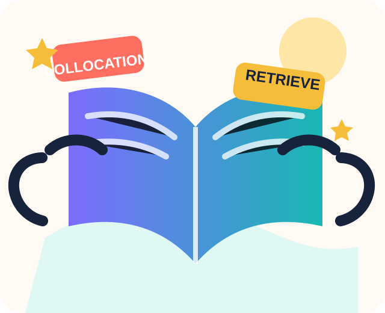

Build words.
Build confidence.
A creative vocabulary and spelling website for Japanese teenagers and university learners. Study words deeply, retrieve them from memory, and use them in real English.
単語を「見る」だけでなく、意味・つづり・発音・使い方を一緒に学び、思い出して使えるようにしましょう。

Learn a word in four dimensions
A word is more than a translation. Strong vocabulary knowledge connects form, meaning, use, and memory.
Form
Spelling, pronunciation, syllables, stress, and word parts.
Meaning
Definitions, images, associations, synonyms, and connotation.
Use
Collocations, grammar patterns, register, and example sentences.
Memory
Retrieval, spacing, feedback, and purposeful reuse.
Quest progress
0 of 12 learning quests completed · 0 points
Choose the correct form
Scientists can ______ changes in the weather.
Choose your next learning path
Each section combines a short explanation with active practice and feedback.
Vocabulary Lab
Word families, collocations, depth of knowledge, and flashcards.
Spelling Zone
Suffix changes, confusing spellings, heteronyms, and dictation.
Katakana Corner
Use loanwords intelligently and avoid false-friend traps.
Learning Strategies
Retrieval practice, spacing, context, and vocabulary notebooks.
Adapted Book Practice
Original activities inspired by selected Oxford Discover 6 vocabulary themes.
Video Classroom
Free videos with before-, while-, and after-watching tasks.
Why these activities work
The site follows a simple principle: first notice a word, then understand it, retrieve it without support, meet it again later, and use it in a meaningful message.